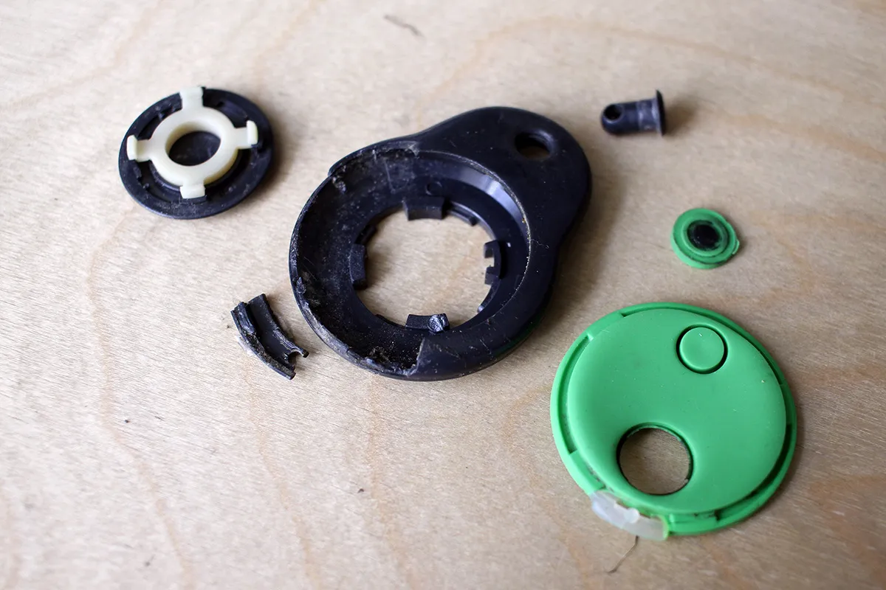
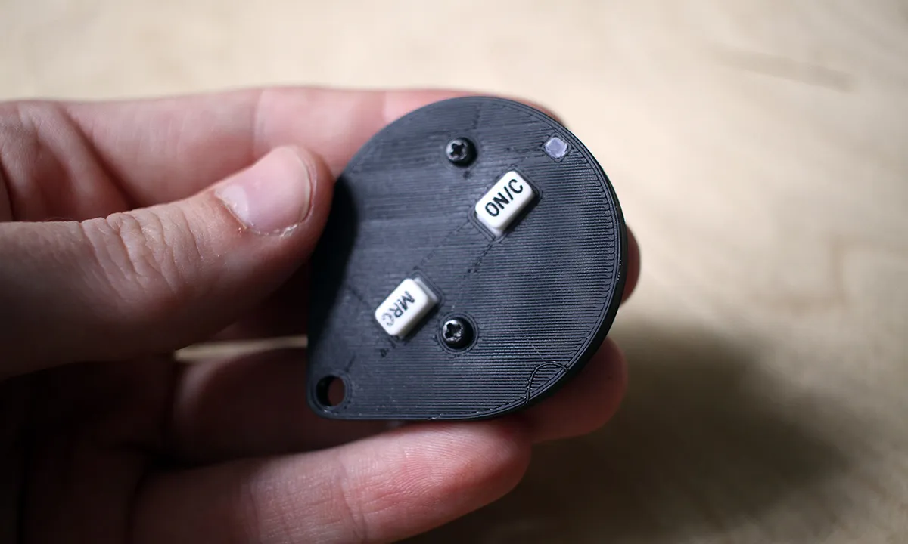

Merlin Fob
I was tasked with fabricating a replacement housing for Merlin M842 remote control for a garage door. Given that the device is most commonly carried on a key chain or thrashed around in a car glovebox, the housing ends up taking a beating with age and a replacement can cost as much as $60 to $90. My goal was to create a competent replacement that would:
- be user serviceable (accessible battery compartment)
- have the led indicator visible
- have a slimmer profile than the original
- be easy to manufacture using a hobby grade FDM 3D printer
- Didn’t take too long to design or print

The circuit board of the remote is a circle, the battery is centered on the back and the buttons are simple printed contacts that get shorted by the rubber buttons. The original rubber buttons were ripped and I ended up salvaging buttons from a calculator that had conductive carbon coating on the bottom.
My design essentially boiled down to two components – the “housing” that’s the main body holding all the components and has the keychain loop, and the “cap” that holds the battery in place.

The design went through 6 iterations on the main body and 3 iterations on the cap. To further “slim down” the profile I made the cap have rounded edges to give a thinner feel to the whole assembly.
Getting the circuit to sit right in the housing was easy, the circuit is pretty symmetrical and key components sit at neat 45 degree angles to everything. The main challenge was to get the tolerances right on the cap for the battery to be centered on the power connector. The led indicator is simply hot glue melted through a hole in the housing. The circuit board had two convenient holes for me to thread screws through to avoid having to design a locking mechanism.

While the calculator buttons look funky and unique, I would ultimately prefer for the buttons to be hidden under the housing. They’re too easy to press accidentally or pull the rubber out of the housing. The best alternative would be to solder in some low profile hardware buttons and use the flexibility of the housing to press them through the plastic.
If you own one of these fobs and yours is falling apart, feel free to download the files and print them on your own. There’s no guarantee that the buttons that you will use be of the same dimensions, so I provided a version with the center point of the buttons for you to cut away (physically or digitally) as much material as you need for the buttons you’ll end up using.